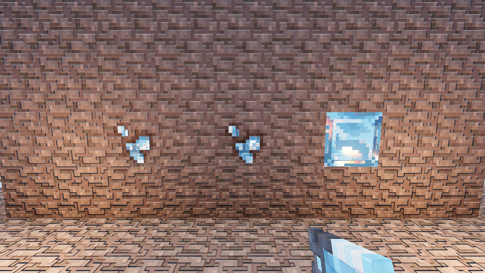
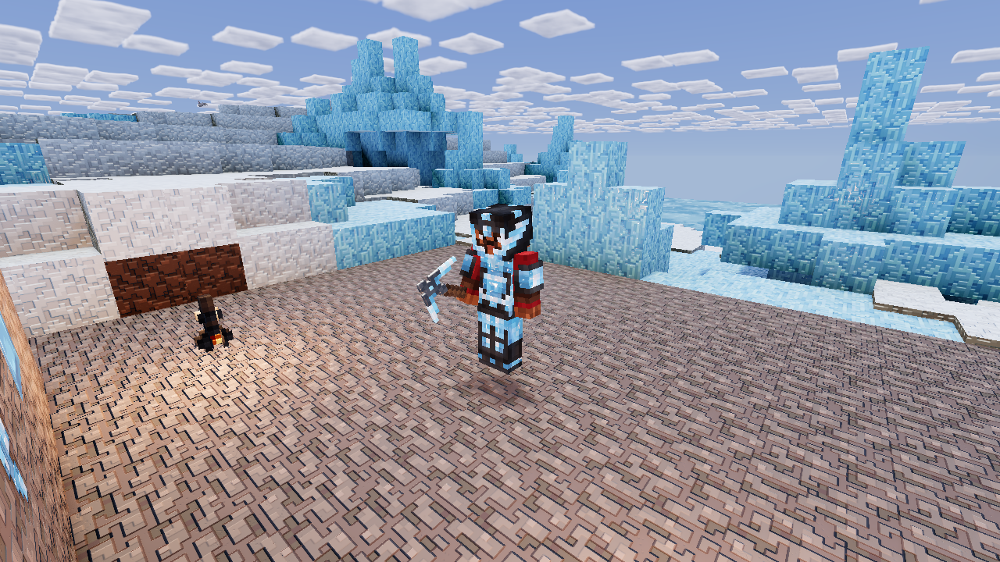
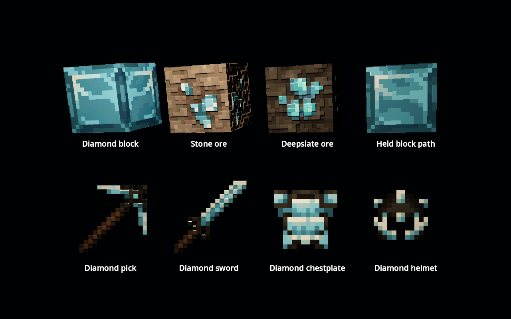

Polished facets that follow the pixel art, with small coloured glints from real lights. The gem pixels in ore receive the treatment; the stone stays rough.
Luanti 5.17.0, Mineclonia release 38561, Godot 4.5.1. The repository's authored relief pack is loaded. This is a temporary server display wall.

The actual player model, inspected with a detached camera and its full-body shadow mesh visible. Armour keeps the model's double-sided rendering.

Production shaders on simple cubes and cards. Switch between the old response, new facets and a moved lamp. These are material studies, not gameplay images.
